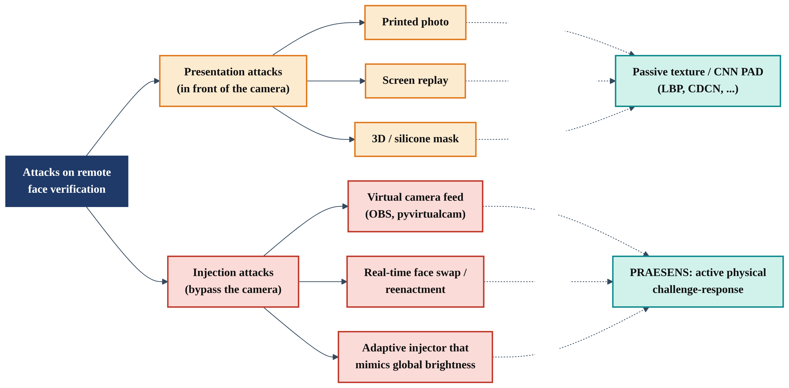
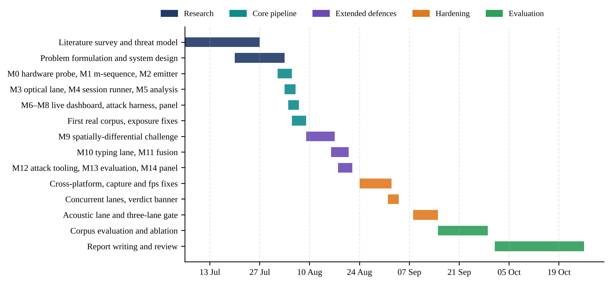
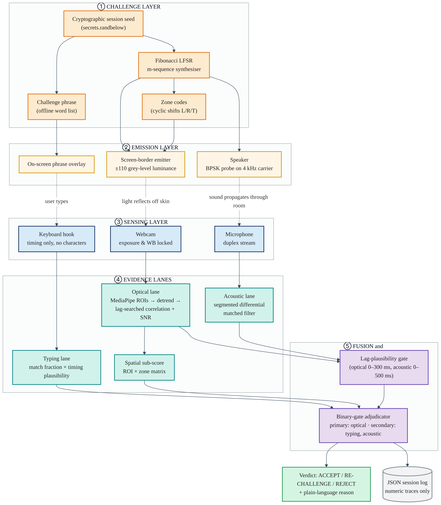
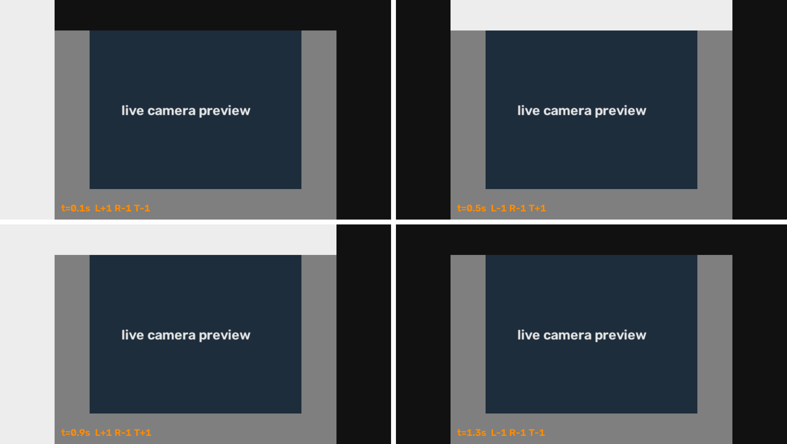
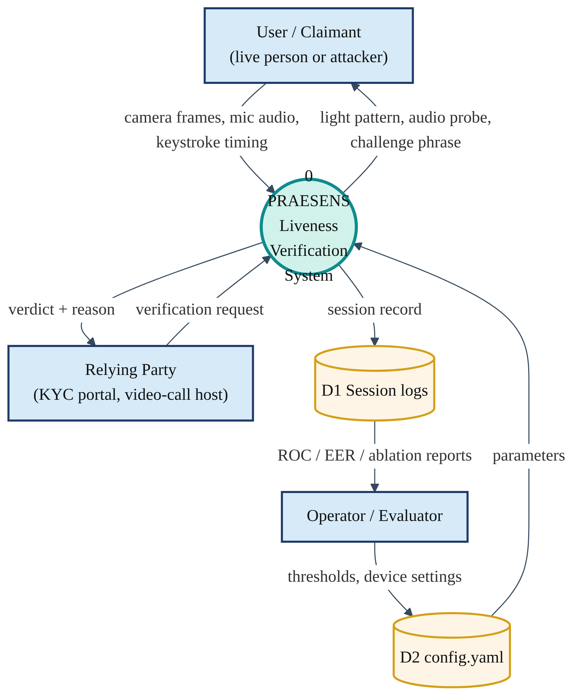
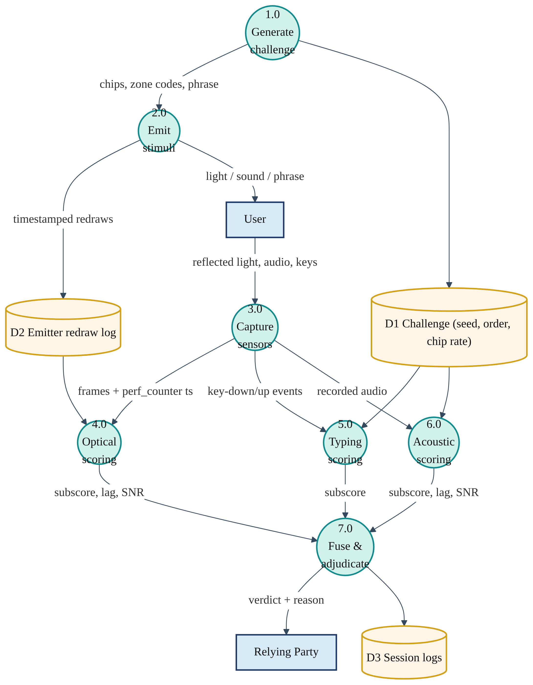
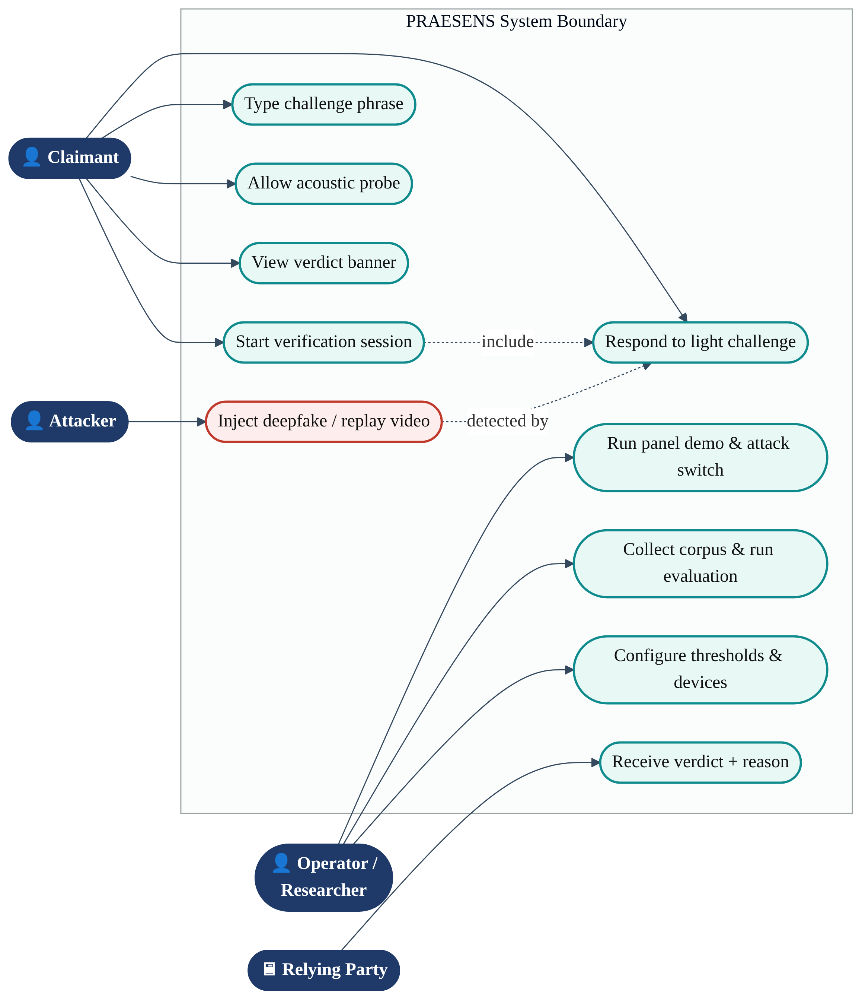
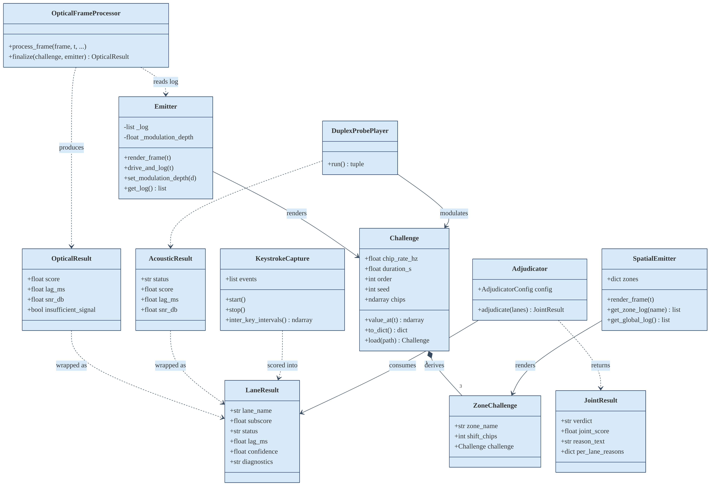
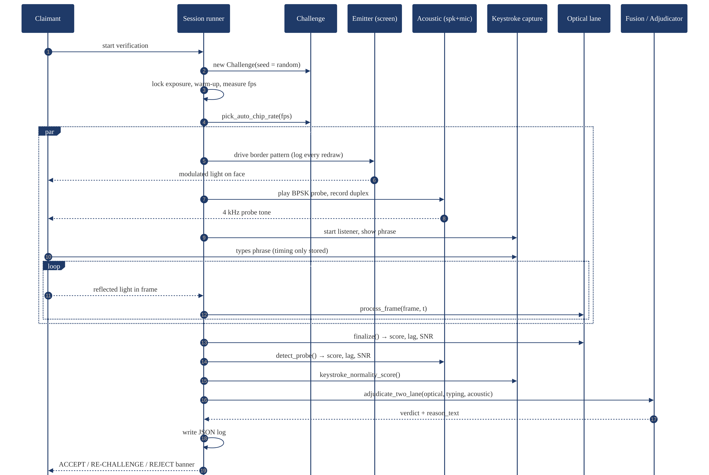

Over the last five years the webcam has quietly become a security device. Banks perform video-based Know-Your-Customer (KYC) onboarding, universities proctor examinations remotely, hospitals run telemedicine consultations, and companies authorise payments and hiring decisions over video calls. In every one of these workflows the relying party implicitly assumes that the pixels arriving from the camera were produced, at that moment, by light reflecting off a live human face that is physically in front of that camera.
That assumption no longer holds. Generative face-manipulation techniques — identity swapping, expression reenactment and fully synthetic faces — can now run in real time on consumer graphics hardware {{c:face2face,tolosana,mirsky}}. The consequences are no longer hypothetical: in early 2024 a finance employee of a multinational firm in Hong Kong transferred about US$25 million after a video conference in which every other participant, including the company’s chief financial officer, was a deepfake {{c:cnn_hk}}. Europol and ENISA both identify synthetic video and remote identity-proofing attacks as a growing, operational threat to law enforcement and to digital onboarding {{c:europol,enisa}}.
The face anti-spoofing literature has historically focused on presentation attacks — printed photographs, screen replays or masks physically held in front of the sensor — standardised in ISO/IEC 30107-3 {{c:iso30107}}. A far more scalable threat is the video-injection attack, in which the attacker never shows anything to a camera at all. A virtual-camera driver (for example OBS Virtual Camera) or a compromised capture pipeline feeds pre-recorded or live-generated frames directly to the application, which cannot tell them apart from a genuine webcam {{c:enisa}}. Injected frames contain none of the moiré, screen bezel, paper texture or depth cues that classical detectors depend on.
A fundamental observation motivates this project: a genuine camera is coupled to the physical world, and an injected stream is not. If the verifier changes the physical world in a way the attacker cannot predict — by emitting an unpredictable pattern of light, sound or interaction — then only a live, physically present user can produce a response that is correctly coded, correctly timed and correctly localised. PRAESENS is a software framework that implements this idea using nothing more than the screen, speaker, microphone, keyboard and webcam already present on every laptop.
1.2 Motivations
Passive detectors are in an arms race they are losing. Classifiers trained to recognise artefacts of today’s generators generalise poorly to unseen manipulation methods and datasets {{c:ffpp,celebdf,fassurvey}}. A defence whose security rests on a physical law, rather than on a learned artefact, does not degrade when generators improve.
Injection attacks bypass presentation-attack detection by design. Since the camera is never involved, any detector that analyses how a spoof looks to a camera is irrelevant. Verifying a cause–effect relationship between a secret stimulus and the sensor reading addresses injection directly.
Accessibility and cost. Many published active-liveness schemes rely on depth sensors, infrared projectors or specialised smartphones. Students, small institutions and users in developing regions mostly use ordinary laptops. A solution that needs no extra hardware, no GPU, no training data and no cloud service can be deployed anywhere.
A bioinformatics perspective on the face as a biological signal source. As students of Computer Science with a specialization in Bioinformatics, we approached the human face not as an image but as living tissue with measurable optical properties. Skin reflects incident light diffusely according to its melanin and haemoglobin content {{c:anderson}}, and the same physics underlies remote photoplethysmography {{c:verkruysse,poh}}. Recovering a known, weak, pseudo-random code from a noisy biological measurement is conceptually the same matched-filter and sequence-correlation problem that pervades biological signal analysis.
Explainability and privacy. Verification decisions affect people’s access to banking, education and healthcare. We wanted every verdict to come with a human-readable reason and wanted the system to collect the minimum personal data possible — keystroke timing but never characters, numeric traces but never face images.
1.3 Scope of the Project
The scope of PRAESENS Project-I covers the complete design, implementation and empirical evaluation of a research-grade prototype:
A per-session challenge synthesiser generating maximum-length LFSR sequences from a cryptographic seed, with derived spatial zone codes and an offline challenge phrase.
A screen emitter (single-zone and three-zone spatial variants) with actual-redraw timestamp logging, and an emitter-off scientific control.
Three independent evidence lanes — optical, typing and acoustic — plus an honest stub interface for an inertial lane on hardware that exposes an IMU.
A fusion and adjudication layer producing ACCEPT / RE-CHALLENGE / REJECT verdicts with plain-language reasons.
Attack tooling built against our own system: a virtual-camera injection harness and an adaptive injector that estimates the emitted pattern from the screen and modulates a source video in real time.
An evaluation pipeline reporting ROC/AUC, EER, APCER, BPCER and ACER in the vocabulary of ISO/IEC 30107-3, per-condition robustness tables, ablation and cross-session analysis, together with a live panel demonstration mode.
Out of scope for this phase are mobile-phone deployment, large multi-subject demographic studies, and evaluation against commercial deepfake services; these are discussed as future work in Chapter 8.
CHAPTER 2
Project Description and Goals
2.1 Literature Review
We organise prior work into five strands: the deepfake threat itself, passive texture- and learning-based anti-spoofing, physiological-signal methods, active challenge–response methods, and the signal-processing and fusion foundations on which PRAESENS builds. {{f-tax}} summarises how the attack classes relate to the two families of defence.

Taxonomy of attacks on remote face verification and the defence family that addresses each
2.1.1 Face manipulation and the deepfake threat
Thies et al. demonstrated real-time facial reenactment of a monocular RGB target with Face2Face {{c:face2face}}, showing that expression transfer could be performed live. Tolosana et al. {{c:tolosana}} and Mirsky and Lee {{c:mirsky}} survey identity swap, attribute manipulation and entire-face synthesis, and both conclude that detectors trained on one family of manipulation degrade sharply on others. Large benchmarks such as FaceForensics++ {{c:ffpp}} and Celeb-DF {{c:celebdf}} have driven progress in forensic classifiers, but Celeb-DF in particular showed that higher-quality fakes reduce the AUC of many published detectors to near chance.
2.1.2 Passive presentation-attack detection
Early anti-spoofing exploited micro-texture differences between real skin and recaptured media using Local Binary Patterns {{c:maatta,chingovska}}, evaluated on datasets such as CASIA-FASD {{c:casia}}. Boulkenafet et al. showed that colour-texture analysis in luminance–chrominance spaces generalises better than grey-scale LBP {{c:boulkenafet}}, and Tirunagari et al. used dynamic-mode decomposition to capture visual dynamics of replayed video {{c:tirunagari}}. Deep models followed: Liu et al. supervised CNN-RNN networks with auxiliary depth and rPPG cues {{c:liu2018}}, and Yu et al. introduced central difference convolutional networks (CDCN) found through neural architecture search {{c:cdcn}}. A recent survey {{c:fassurvey}} highlights that cross-dataset generalisation remains the central unsolved problem — and every one of these methods presumes that the spoof is presented to the camera.
2.1.3 Physiological-signal methods
Verkruysse et al. showed that the cardiac pulse is visible in ordinary video under ambient light {{c:verkruysse}}; Poh et al. recovered it with blind source separation {{c:poh}}, and de Haan and Jeanne {{c:dehaan}} and Wang et al. {{c:wang_pos}} developed robust chrominance-based and plane-orthogonal-to-skin algorithms. Liu et al. used rPPG to detect 3D masks {{c:liu3dmask}}, and FakeCatcher {{c:fakecatcher}} detects synthetic portrait video from the spatial-temporal coherence of biological signals. These methods are passive: a sufficiently good generator, or a replay of a genuine recording, carries a plausible pulse.
2.1.4 Active challenge–response liveness
Active methods change the environment and check the response. Face Flashing {{c:faceflashing}} flashes random colours on a phone screen and verifies the reflected light and its timing — the closest precursor to our optical lane. FaceRevelio {{c:facerevelio}} uses the phone screen as a controllable light source to recover a 3D surface normal map from a single front camera. On the acoustic side, EchoPrint {{c:echoprint}} combines inaudible acoustic echoes with vision for two-factor face authentication, and EchoFace {{c:echoface}} detects media attacks from the acoustic reflection of a face. Keystroke dynamics have long been studied as a behavioural biometric {{c:monrose,killourhy}}. Each of these addresses a single channel, most are designed for smartphones, and none combines several physically independent channels under one shared secret.
2.1.5 Sequence design, detection and fusion foundations
Maximum-length sequences have a two-valued periodic autocorrelation — N at zero shift and −1 elsewhere — which makes them near-ideal probing signals {{c:golomb,macwilliams}}. Their cross-correlation properties, and those of derived families such as Gold codes, are surveyed by Sarwate and Pursley {{c:sarwate,gold}}. Matched filtering, BPSK modulation and coherent versus non-coherent detection are classical topics in digital communications {{c:proakis}}. On fusion, Kittler et al. {{c:kittler}} formalised classifier-combination rules and Ross and Jain {{c:ross}} categorised fusion levels in multibiometric systems. ROC analysis {{c:fawcett}} and the ISO/IEC 30107-3 error metrics {{c:iso30107}} provide the evaluation vocabulary.
Summary of representative literature and its limitations with respect to injection attacks
Work
Approach
Strength
Limitation for remote verification
Määttä et al. 2011 {{c:maatta}}
LBP micro-texture, SVM
Fast, simple
Needs a physical spoof medium; blind to injection
Boulkenafet et al. 2016 {{c:boulkenafet}}
Colour texture (HSV / YCbCr LBP)
Better cross-dataset results
Learned artefacts; deepfakes have none of them
Liu et al. 2018 {{c:liu2018}}
CNN-RNN with depth and rPPG supervision
Auxiliary physiological cues
Requires training data; replayable
Yu et al. 2020 {{c:cdcn}}
Central difference CNN (CDCN)
State-of-the-art intra-dataset
Generalisation gap; GPU cost
Rössler et al. 2019 {{c:ffpp}}
Forensic CNN on FaceForensics++
High accuracy on known fakes
Degrades on unseen generators {{c:celebdf}}
Ciftci et al. 2020 {{c:fakecatcher}}
Biological-signal coherence
Physiology-based
Passive; a replayed genuine video passes
Tang et al. 2018 {{c:faceflashing}}
Random screen colour flashes
Active, timing-verified
Single optical channel; smartphone-centred
Farrukh et al. 2020 {{c:facerevelio}}
Screen-lit photometric stereo
Recovers 3D shape
Single channel; tuned to phones
Zhou et al. 2018 {{c:echoprint}}
Acoustic echo + vision
Two modalities
Phone earpiece geometry; trained model
Killourhy & Maxion 2009 {{c:killourhy}}
Keystroke-dynamics anomaly detection
Behavioural biometric
Enrolment needed; stores typed text
2.2 Research Gap
The review exposes four gaps that PRAESENS is designed to close:
No defence aimed squarely at injection on commodity laptops. Passive PAD inspects appearance; injection attacks have perfect appearance. Active schemes exist, but almost all target smartphones with controlled screen–face geometry.
Single-channel active methods are vulnerable to one well-engineered estimator. An attacker who can observe the screen (a second camera, screen capture) can estimate a single global flash pattern and re-apply it to injected video. No prior system we found uses spatially-differential codes that force each facial region to answer its own part of the screen.
No shared-secret fusion across physically independent channels. Light, sound and keystrokes travel through entirely different physics. Binding all three to one per-session secret means an attacker must defeat every channel simultaneously, in real time, with correct timing.
Weak treatment of measurement failure, explainability and privacy. Most systems collapse “the sensor could not see the signal” and “this is an attack” into a single low score, produce an unexplained verdict, and retain biometric data. A trustworthy system must separate insufficient evidence from negative evidence, explain itself, and minimise what it stores.
2.3 Objectives
To design a per-session, cryptographically seeded challenge whose emitted signal has near-ideal autocorrelation and is fully reproducible from a stored seed for audit.
To recover that challenge from the light reflected by a user’s face with an ordinary webcam, robustly to frame-rate jitter, auto-exposure, slow lighting drift and moderate variation in lighting, distance, eyewear and makeup.
To defeat the strongest single-channel counter-attack (global brightness re-modulation of injected video) through spatially-differential zone codes.
To add physically independent typing and acoustic lanes bound to the same session secret, under a strict keystroke-privacy contract.
To fuse the lanes with a lag-plausibility gate into an explainable three-way verdict that distinguishes REJECT from RE-CHALLENGE.
To evaluate the system honestly on real hardware using ISO/IEC 30107-3 metrics, scientific controls, ablation and real injection attempts, and to demonstrate it live.
2.4 Problem Statement
Given only the commodity sensors and actuators of a standard laptop — display, speaker, microphone, keyboard and webcam — design and evaluate a real-time verification system that decides whether the video stream presented to an application originates from a live human who is physically present in front of that device at that moment, such that pre-recorded, replayed, synthetically generated or virtually-injected video, including adaptive attacks that observe the emitted challenge, is rejected; such that every decision is explainable; and such that no face images or typed characters are retained.
2.5 Project Plan
The project was executed as a sequence of fourteen measured milestones followed by hardening and evaluation phases. Each milestone ended with automated tests and, wherever possible, a real-hardware run whose numeric log was committed to the repository; a milestone notebook records what was actually measured rather than what was intended. {{f-gantt}} shows the schedule and {{t-milestones}} lists the milestones.

Project plan (Gantt chart), July – October 2026
Milestones and deliverables
No.
Milestone
Deliverable / acceptance evidence
M0
Hardware probe
Measured FPS, exposure/WB lock and display redraw capability
M1
Challenge synthesiser
LFSR m-sequence with verified maximal period and two-valued autocorrelation
M2
Emitter
Full-screen border emitter with actual-redraw perf_counter log; emitter-off control
M3
Optical lane
ROI luminance, detrending, lag-searched correlation, SNR gating, adaptive depth
Capture/FPS fixes, concurrent lanes, verdict banner, acoustic lane and three-lane gate
CHAPTER 3
Technical Specification
3.1 Requirements
3.1.1 Functional
Functional requirements
ID
Requirement
FR1
Generate a fresh, unpredictable challenge (seed, LFSR order, chip rate, duration) for every session and persist the seed so the exact sequence can be regenerated for audit.
FR2
Render the challenge as screen-border luminance (single-zone or left/right/top zones) and log the actual time of every redraw.
FR3
Lock camera exposure and white balance, measure the steady-state frame rate, and choose a chip rate the camera can sample.
FR4
Locate the face, sample forehead and cheek luminance on every frame, and compute the optical subscore, lag and in-band SNR.
FR5
Compute the ROI × zone correlation matrix and spatial assignment score for spatial sessions.
FR6
Display a session-unique phrase and score keystroke correctness and timing without storing any character.
FR7
Play a BPSK acoustic probe and detect its round-trip lag and SNR through a single duplex audio stream.
FR8
Fuse lane results into ACCEPT / RE-CHALLENGE / REJECT with a plain-language reason; display a colour-coded banner and terminal summary.
FR9
Write one JSON log per session containing numeric traces, metadata and the full fusion record.
FR10
Provide attack tooling, a live panel demo, and an evaluation pipeline producing standard PAD metrics.
3.1.2 Non-Functional
Non-functional requirements
ID
Attribute
Requirement
NFR1
Security
Challenge seed drawn from the OS CSPRNG (secrets); nothing an attacker can observe in advance predicts the sequence.
NFR2
Privacy
No face image, video or typed character is ever stored; logs hold numeric traces only; attack videos stay in a git-ignored folder.
NFR3
Real-time performance
Single shared capture loop; face landmarks every 2nd frame on a down-scaled copy; live verdict within one session (≈ 20–40 s).
NFR4
Robustness
Never crash on a missing device; degrade to no_evidence with a reason instead of fabricating a score.
NFR5
Explainability
Every verdict carries a sentence naming the deciding lane, its subscore and its lag.
NFR6
Portability
Runs on Windows and macOS; camera backend chosen per OS; CPU-only inference.
NFR7
Configurability & reproducibility
Every tunable lives in config.yaml; every session re-scorable offline from its log.
NFR8
Maintainability
Modular lanes with a uniform LaneResult interface; automated tests for every module.
3.2 Feasibility Study
3.2.1 Technical Feasibility
Technical feasibility was established empirically before any lane was built (Milestone 0). The hardware probe confirmed that a consumer UVC webcam can have its exposure and white balance locked, that the display can redraw a full-screen border far faster than the chip rate, and that a ±110 grey-level border modulation produces a luminance change on facial skin that is measurable above sensor noise. The principal technical risk discovered was that the frame rate achievable at a face-detectable exposure was as low as 8 fps; this was addressed by adaptive chip-rate selection (Section 5.1.3). Mature open-source libraries — OpenCV {{c:opencv}}, MediaPipe face and hand landmarkers {{c:mediapipe,facemesh,mphands}}, NumPy {{c:numpy}} and SciPy {{c:scipy}} — cover all perception and signal-processing primitives on CPU.
3.2.2 Economic Feasibility
PRAESENS requires no hardware beyond a standard laptop and uses only free and open-source software. There is no model-training cost, no labelled dataset to purchase and no per-call cloud fee. A detailed cost analysis is presented in Section 7.6; the marginal operating cost of a verification is a fraction of a paisa in electricity.
3.2.3 Social Feasibility
The system protects people from impersonation fraud while being respectful of them: the light pattern is a gentle grey-level border change, the acoustic probe is a short tone, and the typing challenge is five ordinary words. The keystroke-privacy contract (only timing and a per-key boolean are retained) and the no-images policy reduce the data-protection burden for institutions adopting the system. Because the method is training-free, it does not inherit demographic bias from a training set; robustness across skin tone is nevertheless treated as an explicit evaluation axis, and low-reflectance conditions are routed to RE-CHALLENGE rather than REJECT.
3.3 System Specification
3.3.1 Hardware Specification
Hardware specification (development and evaluation platform)
Component
Specification used
Minimum recommended
Computer
ASUS TUF A16 laptop (Windows); MacBook for macOS compatibility testing
Any dual-core x86/ARM laptop
Camera
Built-in / USB UVC webcam, 640 × 480, exposure-locked (8–30 fps depending on exposure)
Duplex audio playback and capture for the acoustic lane
pynput
OS keyboard hook for keystroke timing
mss, pyvirtualcam, OBS Studio
Attack tooling: screen capture and virtual-camera injection
Matplotlib, PyYAML
Evaluation figures; configuration
pytest
Automated testing (148 test cases)
Git / GitHub
Version control; session logs committed as evidence
Windows 11, macOS
Target operating systems
CHAPTER 4
Design Approach and Details
4.1 System Architecture
PRAESENS is organised as five layers ({{f-arch}}). The challenge layer draws one secret per session and derives every channel’s stimulus from it. The emission layer uses the host’s own screen and speaker as actuators. The sensing layer observes the physical response through one shared camera capture loop, one duplex audio stream and one keyboard hook — never two competing consumers of the same device. The evidence lanes turn raw sensor data into a uniform LaneResult (subscore, status, lag, confidence, diagnostics). Finally the fusion and adjudication layer applies lag-plausibility and binary gating rules to reach a verdict, which is shown to the user and written to a JSON log.

Layered system architecture of PRAESENS
Three design principles run through the architecture:
One secret, many physics. Light, sound and keystrokes propagate through unrelated physical media, but all carry functions of the same seed, so a single saved seed regenerates every lane’s expected signal exactly.
Joint temporal coherence, not an averaged score. A lane counts only if its response arrives at a physically plausible lag (0–300 ms for camera latency, 0–500 ms for an audio round trip). A high correlation at an implausible lag — a lucky coincidence or an attacker who matched magnitude but not timing — contributes nothing.
Honest degradation. A lane that cannot measure says no_evidence or insufficient_signal; it never fabricates a zero. This keeps “we could not see” distinct from “we saw an attack”.
{{f-emit}} shows actual frames produced by the spatial emitter’s renderer: the left, right and top border zones carry independent codes while the centre shows the live camera preview.

Four successive frames rendered by SpatialEmitter.render_frame(); each border zone switches independently between B+A and B−A
4.2 Design
4.2.1 Data Flow Diagram
The context-level (Level 0) DFD in {{f-dfd0}} treats PRAESENS as a single process exchanging data with the claimant, the relying party and the operator. The Level 1 DFD in {{f-dfd1}} decomposes it into seven processes and three data stores. Note the data store D2: the optical lane correlates against the emitter’s logged actual redraws, not an idealised schedule, because operating-system scheduling jitter would otherwise blur the correlation peak.

Level 0 (context) data flow diagram

Level 1 data flow diagram
4.2.2 Use Case Diagram
Four actors interact with the system ({{f-uc}}): the claimant, who starts a session and responds to the light, typing and acoustic challenges; the attacker, whose injected or replayed video must be caught by the light-challenge use case; the operator / researcher, who configures thresholds, runs the panel demonstration and collects evaluation corpora; and the relying party, which consumes the verdict and its reason.

Use case diagram
4.2.3 Class Diagram
{{f-class}} shows the principal classes. Challenge is an immutable value object that composes three ZoneChallenges. Both emitters render a challenge and keep a redraw log. Each lane’s processor produces a lane-specific result (OpticalResult, AcousticResult, keystroke events) that is wrapped into the uniform LaneResult, which is the only type the Adjudicator and adjudicate_two_lane() consume. This uniform interface is what allowed new lanes to be added without changes to fusion.

Class diagram of the core praesens package
4.2.4 Sequence Diagram
{{f-seq}} traces one three-lane session. After exposure is locked and the steady-state frame rate measured, the chip rate is chosen; then the screen pattern, the acoustic probe and the typing phrase all run concurrently in one challenge window. Each camera frame is grabbed once and handed to the optical processor. Only after the window closes are the lanes finalised and adjudicated, so no lane can influence another’s measurement.

Sequence diagram of a concurrent three-lane verification session
4.2.5 Verdict Decision Logic
The final adjudication policy is an explicit truth table ({{f-verdict}}): the optical lane is primary — if it fails, no other lane can rescue the session (REJECT). Typing and acoustic are secondary — if optical passes but a secondary lane fails, the user is asked to retry (RE-CHALLENGE) rather than being rejected outright. ACCEPT requires every lane that ran to pass.